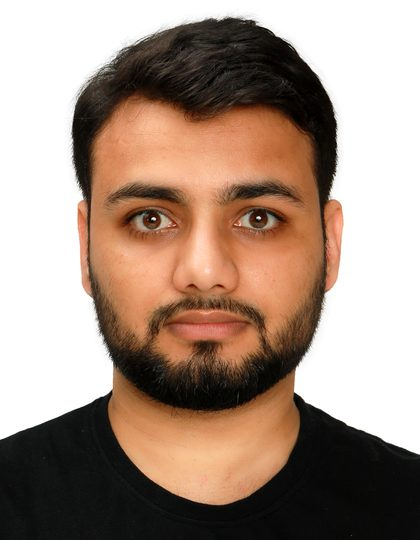

3D reconstruction & geometry
NeRF and SLAM reconstruction, multi-view calibration, point-cloud registration and merging, and turning the result into measurements someone can trust.
The Netherlands
Computer Vision & AI Engineer — 3D perception, deep learning, edge deployment
I have spent 9+ years turning perception research into systems that actually run somewhere: on tractors pulling implements through a field, on carts rolling down greenhouse aisles, on embedded GPUs, on phones. I take problems end to end — choosing the sensors, capturing and curating the data, training the models, making inference fast enough to be useful, and building the services and apps around it.
Currently technical lead on agricultural AI programmes at Track32, working directly with machinery manufacturers, plant breeders and growers across Europe.

Different domains, same underlying problem: getting a machine to understand the geometry and state of a messy scene, fast enough and reliably enough that something can act on it.
NeRF and SLAM reconstruction, multi-view calibration, point-cloud registration and merging, and turning the result into measurements someone can trust.
Transformer and CNN models for dense scene understanding, small-object counting at high resolution, monocular and stereo depth, optical flow.
ONNX and TensorRT pipelines on NVIDIA Jetson, Hailo NPU conversion, CoreML on phones, ROS2 integration, and the profiling work that gets a model inside its latency budget.
Capture rigs and recording apps, dataset versioning and benchmarking, job queues and APIs, automated QA reporting. Most of what makes a vision product work is not the network.
Track32 · Netherlands
Upwork · remote
Shanghai Jiao Tong University · Shanghai, China
Versa Inc. · Shanghai, China
Platalytics Inc. · Lahore, Pakistan
Most of this work is commercial and lives in private repositories, so there is no source to link. Descriptions are deliberately about the engineering rather than the client's data.
Track32 for a German agricultural machinery manufacturer · production system
Real-time perception for a self-driving field cultivator. Semantic segmentation of soil, plant residue and tool parts is fused with RAFT optical flow and stereo depth to decide whether a tine is blocked, whether soil is accumulating, and whether a tine or shear bolt is worn or broken. Runs as a ROS2 graph on an embedded Jetson at 15 fps with ONNX and TensorRT inference. Includes automated tine-silhouette calibration, synthetic wear-mask generation for training data, and a state machine that filters transient detections before it interrupts the operator.
Track32 · research platform turned service
Turns a hand-held or cart-mounted recording of a plant into measured phenotypic traits: NeRF and SLAM reconstruction, ICP registration and merging of multi-sensor point clouds, 3D segmentation of plant structures, then extraction of leaf shape and area, fruit count and volume, height and canopy geometry. Wrapped as an asynchronous job service — FastAPI gateway, Celery workers, PostgreSQL, S3-compatible storage, containerised reconstruction and segmentation stages — so researchers and web clients can submit recordings and collect results.
Track32 · German publicly funded research consortium
Measures how well a cultivator actually prepared the soil, from depth and lidar data captured while the machine is working: surface evenness, clod-size distribution and crumbling quality, computed per pass and streamed to the operator display. I built the analysis backend and the ROS2 quality-of-work node, plus a Flask and WebSocket HMI for live monitoring on an in-cab industrial PC.
Track32 for plant breeders and propagators · recurring commercial runs
A family of production pipelines that measure plants at breeding scale. QR-anchored scale recovery and plant instance detection select the best image per batch, then task-specific models extract traits: flower and bud counts from tiled high-resolution YOLO inference, leaf coverage and discoloration by segmentation, seedling vigour classification from 4-channel RGB and chlorophyll-fluorescence images, plant height from stereo depth. Results flow back into the client's data platform with automated quality assurance, CSV reporting and visual overlays for human review.
Track32 for a greenhouse breeding client and an agricultural robotics company
The data-acquisition layer everything else depends on. A multi-camera OAK-D recorder (depthai v3, one pipeline per device) captures synchronised RGB, stereo, depth and IMU from a rolling photocart, driven by a local FastAPI and vanilla-JS operator UI with watchdogs, disk guards, automatic transfer to external media and a synthetic-camera mode for development without hardware — designed so a compromised recording cannot be mistaken for a good one. Alongside it, a Charuco intrinsic and extrinsic calibration framework that globally optimises multi-camera poses with an Open3D pose graph.
Doctoral research · published in Image and Vision Computing
A fast monocular depth network that fixes the characteristic depth bleeding across object boundaries by learning body and edge regions under separate supervision, then recombining them — matching much heavier baselines at a fraction of the inference cost.
Five peer-reviewed papers and one preprint from my master's and doctoral research at Shanghai Jiao Tong University. Titles link to a scholarly search.